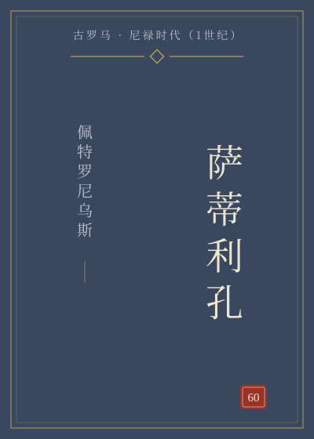
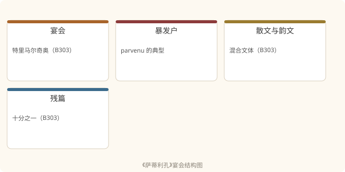

萨蒂利孔
一、基本信息
| 作者 | 佩特罗尼乌斯 |
|---|---|
| 成书/出版 | 成书年代不确（约1世纪——通说待核）；作者卒于66年（Britannica：died in ad 66） Gaius Petronius Arbiter — Encyclopaedia Britannica（百科全书） |
| 国别/地区 | 古罗马 |
| 时代 | 古代 · 尼禄时代（1世纪） |
| 体裁 | 小说（存世残篇） |
| 语言 | 拉丁语 |

《萨蒂利孔》宴会结构图（主题·结构图）
二、创作背景
Britannica（B303）：'The longest and the best episode in the surviving portions of the Satyricon is the Cena Trimalchionis, or Banquet of Trimalchio (ch. 26–78)'；存世部分'probably represent about one-tenth of the complete work'。
作者（B303）：'welcomed by Nero into his inner circle as his director of elegance (arbiter elegantiae), whose word on all matters of taste was law'。
三、内容脉络
恩科尔皮乌斯与 Giton 的流浪——特里马尔奇奥的宴会（第26—78章）（B303）。
'Trimalchio is the quintessence of the parvenu'（暴发户的典型——B303）。
四、主要人物表
| 人物 | 身份 | 说明 |
|---|---|---|
| 特里马尔奇奥 | 暴发户 | 'quintessence of the parvenu'（B303） |
| 恩科尔皮乌斯 | 叙述者 | （通说待核） |
五、主题与艺术特点
- 暴发户的讽刺（B303）。
- 散文与韵文混合（B303：mixture of prose and verse）。
- 尼禄时代的'趣味'与虚伪（B303 语境：arbiter elegantiae）。
六、影响与评论
- Britannica：'In his book, as in his life, Petronius achieved fame by indolence'（B303）。
Gaius Petronius Arbiter — Encyclopaedia Britannica（百科全书） - 作者页：'pure, easy, and elegant'的语言（B303）。
Gaius Petronius Arbiter — Encyclopaedia Britannica（百科全书）
七、阅读建议
难点
- 残篇的断裂。
- 拉丁俗语。
- 《萨蒂利孔》（人民文学出版社/上海译文版本，通说待核）。
- 拉丁文原版（公有领域）。
古典讽刺进阶之作。
八、待核实
- 宴会章节（26—78）细节核对。
- 残篇比例（十分之一说——B303 已载）核对。
- 费里尼电影（1969年 Fellini Satyricon）待核。
本页主要来源
佩特罗尼乌斯的其他收录作品：萨蒂利孔